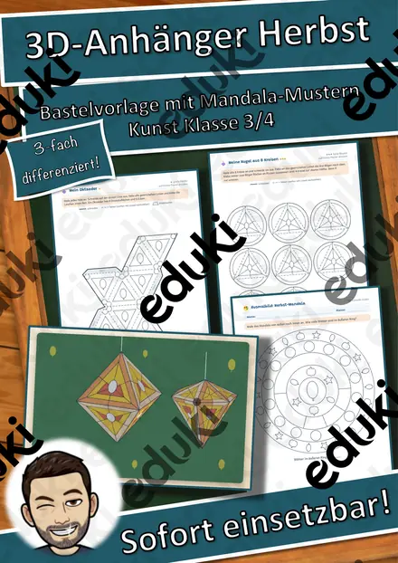
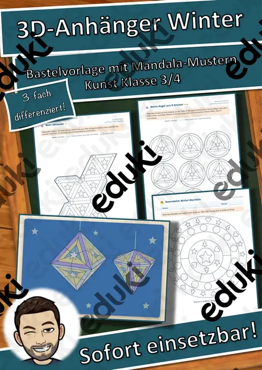
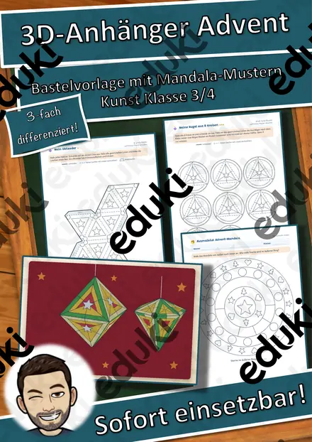
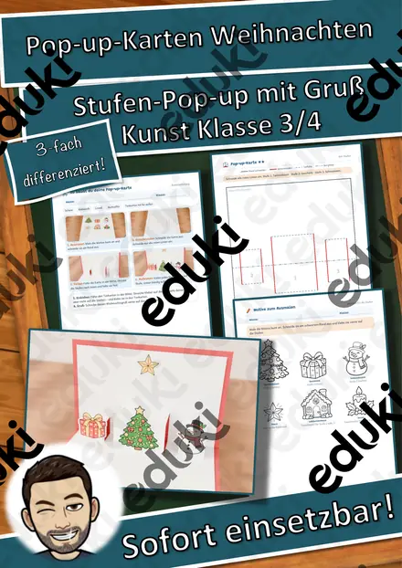
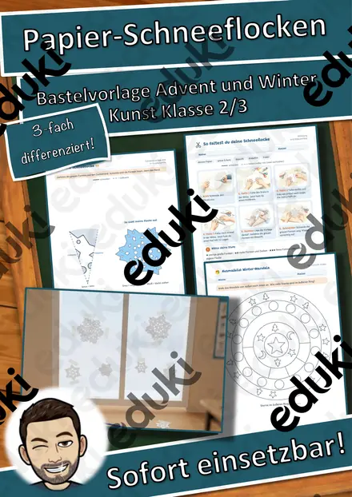
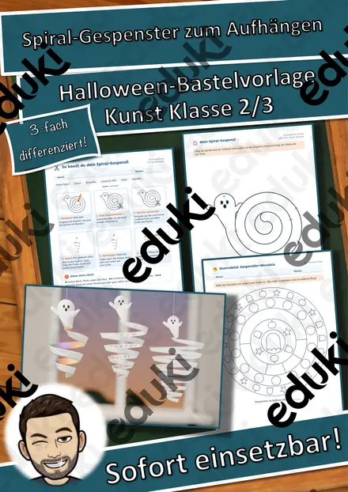
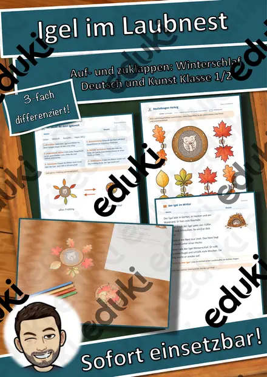
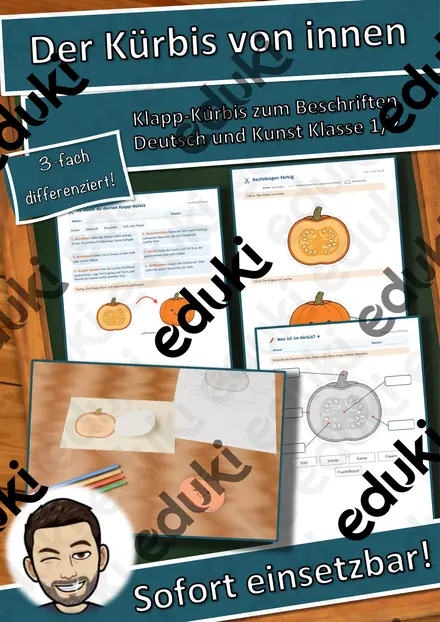

3D-Anhänger Halloween – Oktaeder, Diamant und Kugel zum Ausmalen und Basteln, 3-fach differenziert (Klasse 3/4)
Aus einem flachen Blatt wird ein glänzender Anhänger: Meine Kinder malen Mandala-Muster zum Thema Halloween an, schneiden das Netz aus, falten und kleben – und schon dreht sich ein Oktaeder, ein Diamant oder eine Kugel am Fenster. Ganz nebenbei entdecken sie Ecken, Kanten und Flächen von Körpern.
Dreifach differenziert (★/★★/★★★):
- ★ Oktaeder mit großen Feldern und dicker Schnittlinie
- ★★ Diamant (Doppelpyramide) mit Mandala-Muster
- ★★★ Kugel aus 8 Kreisen mit feinen Mustern oder Oktaeder mit eigenem Muster
Enthalten (13 Seiten):
- Hinweise für Lehrkräfte mit Ablauf (ca. 90 Minuten), Differenzierung, Kopierplan und Lehrplanbezug
- Überblick mit Beispielbild
- Bastelanleitung in 6 Bildschritten mit Linienlegende (schneiden, falten, Klebelasche)
- 4 Schnittbögen: Oktaeder, Diamant, Kugel aus 8 Kreisen, Oktaeder zum Selbstgestalten
- Lesetext „Die Kürbislaterne“ mit Aufgaben in 3 Stufen (richtig/falsch, Fragen, Elfchen)
- Malen nach Ergebnis in 3 Stufen (bis 100, Einmaleins, Geteilt) für schnelle Kinder
- Ausmalbild Mandala mit Zählaufgabe
- Lösungen
Alle Vorlagen und Grafiken sind eigene Vektorgrafiken, die Netze sind maßgenau gezeichnet und alle Ausmalfelder sind groß genug für Kinderhände. Viel Freude beim Falten wünscht Snice
FachKunst
KlasseKl. 3–4
SchulformGrundschule
MaterialartArbeitsblätter, Mal- und Bastelvorlagen, Fördermaterial/Inklusion
Ähnliche Materialien

3D-Anhänger Herbst – Oktaeder, Diamant und Kugel zum Ausmalen und Basteln, 3-fach differenziert (Klasse 3/4)

3D-Anhänger Winter – Oktaeder, Diamant und Kugel zum Ausmalen und Basteln, 3-fach differenziert (Klasse 3/4)

3D-Anhänger Advent – Oktaeder, Diamant und Kugel zum Ausmalen und Basteln, 3-fach differenziert (Klasse 3/4)

Pop-up-Karten Weihnachten – Bastelvorlage mit Stufen-Pop-up, Motiven und Weihnachtsgruß, 3-fach differenziert (Klasse 3/4)

Papier-Schneeflocken falten und schneiden – Winter-Bastelvorlage mit Sachtext, 3-fach differenziert (Klasse 2/3)

Spiral-Gespenster zum Aufhängen – Halloween-Bastelvorlage mit Lesetext, 3-fach differenziert (Klasse 2/3)

Igel im Laubnest – Klappnest basteln mit Sachtext Winterschlaf, 3-fach differenziert (Tiere im Herbst, Klasse 1/2)
